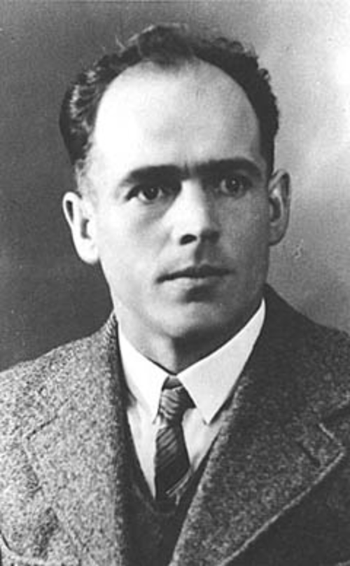
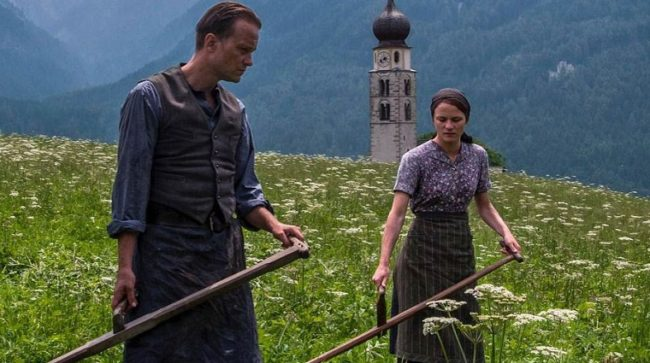

<!DOCTYPE html>
<html>
<head>
  <meta charset="UTF-8">
  <meta name="viewport" content="width=device-width, initial-scale=1.0">
  <meta http-equiv="X-UA-Compatible" content="ie=edge">
  <title>Tribute Page for Franz Jägerstätter</title>
  <link href="css/styles.css" type="text/css" rel="stylesheet">
</head>
</html>
<body>
  <header>
    <h1 id="title">Franz Jägerstätter</h1>
    <h2>A martyr of Peace</h2>
  </header>
  <figure id="portrait-figure">
    
    <figcaption id="img-caption">
      Franz Jägerstätter, executed for refusing to enlist in the nazi army
    </figcaption>
  </figure>
  <main id="main">
    <article id="tribute-info">
      <h4 id="headline">Here's a timeline of Jägerstätter's life and canonization:</h4>
      <ul>
        <li><strong>1907</strong> - born in Sankt Radegund, Upper Austria, a small village between Salzburg and Braunau am Inn. Illegitimate child of a chambermaid and a farmer as his parents could not afford a marriage</li>
        <li><strong>1917</strong> - following the death of his father in WW1 Franz's mother gets married and he is adopted by her husband, Heinrich Jägerstätter."</li>
        <li><strong>1936</strong> - he marries Franziska Schwaninger, a deeply religious woman. Inspired by his wife, Jägerstetter begins to study the bible and the life of saints. The marriage produced three daughters."</li>
        <li><strong>1938</strong> - German troops move into Austria. Franz is the only person in the village to vote against the Anschluss in the plebiscite of 10 April; nevertheless, the local authorities suppress his dissent and announce unanimous approval.</li>
        <li><strong>1940</strong> - joins the Third Order of Saint Francis.</li>
        <li><strong>1941</strong> - drafted for the first time, is forced to take the Hitler oath, but can return home a year later under an exemption as a farmer. He writes to his bishop, saddened that the episcopate seems afraid to confront the regime on its eugenics program.</li>
        <li><strong>1941</strong> - works as sacristan at the local parish church, being deferred from military service four times.</li>
        <li><strong>1943</strong> - after many delays, Jägerstätter was finally called to active duty on 23 February.</li>
        <li><strong>1943</strong> - he maintains his position against fighting for Nazi Germany and upon entering into the Wehrmacht garrison in Enns on March 1 declared his conscientious objection.</li>
        <li><strong>1943</strong> - he is immediately arrested and placed in custody. A priest from his village visits him in jail and tries to talk him into serving, but does not succeed. When he hears of the faith of the Austrian priest Franz Reinisch, who had been executed for his refusal to take the Hitler oath, he is determined to go the same way.</li>
        <li><strong>1943</strong> - accused of Wehrkraftzersetzung (undermining of military morale), Jägerstätter is sentenced to death on 6 July 1943. He gets deported to Brandenburg-Görden Prison on 9 August, where he is executed by guillotine in the afternoon, aged 36</li>
        <li><strong>1950</strong> - the municipality of Sankt Radegund at first refused to put his name on the local war memorial and a pension for his widow was not approved until this date</li>
        <li><strong>1964</strong> - sis story, previously ignored, gets notoriety when US sociologist Gordon Zahn publishes his biography, <em>In Solitary Witness.</em></li>
        <li><strong>1968</strong> - Thomas Merton, the famed Trappist monk and peace activist, includes a chapter about Franz Jägerstätter in his book <em>Faith and Violence</em>.</li>
        <li><strong>2007</strong> - in June, Pope Benedict XVI issues an apostolic exhortation declaring Jägerstätter a martyr. On 26 October, he is beatified in a ceremony held by Cardinal José Saraiva Martins at the New Cathedral in Linz. His feast day is the day of his christening, 21 May."</li>
        <li><strong>2018-2019</strong> - a movie that tells his life, Radegund, written and directed by Terrence Malick, is scheduled for release.</li>
      </ul>
    </article>
    <article>
      <figure>
          
        <figcaption>
          Picture from the movie "A hidden life" by Terrence Malick, narrating Franz's life.
          <!-- <p id="overtext">Click here to watch a clip from the movie!</p> -->
        </figcaption>
      </figure>
    </article>
  </main>
  <footer id="footer">
    <blockquote>
      <p>He is a shining example in his fidelity to the claims of his conscience — an advocate of nonviolence and peace.".</p>
      <div>-- bishops Ludwig Schwarz and Manfred Scheuer</div>
    </blockquote>
    <h3>You can read a more detailed description of his life on his <a id="tribute-link" href="https://en.wikipedia.org/wiki/Franz_J%C3%A4gerst%C3%A4tter" target="_blank">Wikipedia entry</a>.</h3>
  </footer>
  <script src="js/scripts.js"></script>
</body>
</html>